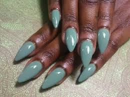
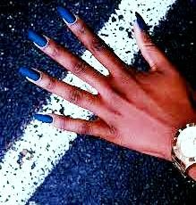
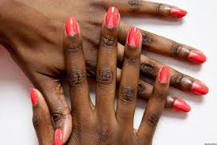
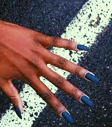

|
Short Pointy Nail Designs




Pointy nails are definitely daring. Pointed nails are also known as stiletto nails or claw nails.
It is quite a sensation and worn by most celebrities such as Rihanna and Adele.
If you want to make your finger look longer and slender then choose this nail shape.
This trend is worth a try however it is also the weakest nail shape.
Most often it is done in acrylic or gel nails so as to prevent damaging your natural nails.
Pointed nails are a beauty and a curse.
Even if they are a trend right now but they look ferocious.
Also, if you are not careful then it might have the potential of hurting your eyes.
Still, if you can wear stiletto nails with stiletto heels on your night out then that is truly amazing!
Do you want to have pointy nails? Here we will offer you the latest and the most stylish stiletto nail art designs that every girl wants.
Pointed nails can fit any girl. It can give her a sexy and elegant look. If you have never tried this nail shape then get inspired by these nail designs.
Enjoy the different styles and colors of stiletto nails. Try them out and show off your amazing pointy nails with confidence.
|